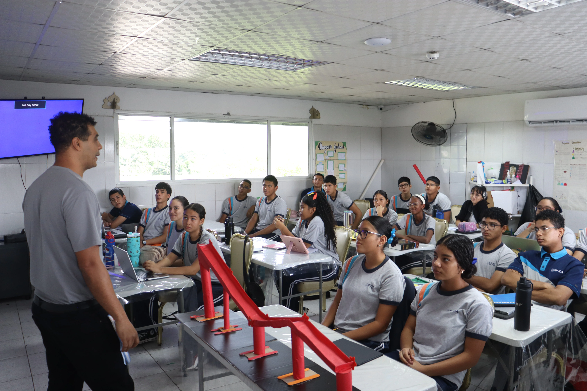

Campus Activo
Aulas Equipadas con Enfoque Tecnológico
Espacios donde la teoría se convierte en experimentación constante con herramientas interactivas, proyectos colaborativos y metodología STEM aplicada al aula.
Explorar Bachilleres →